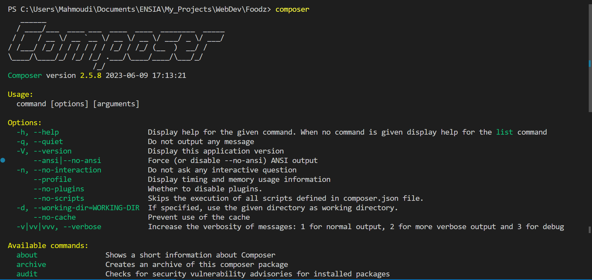
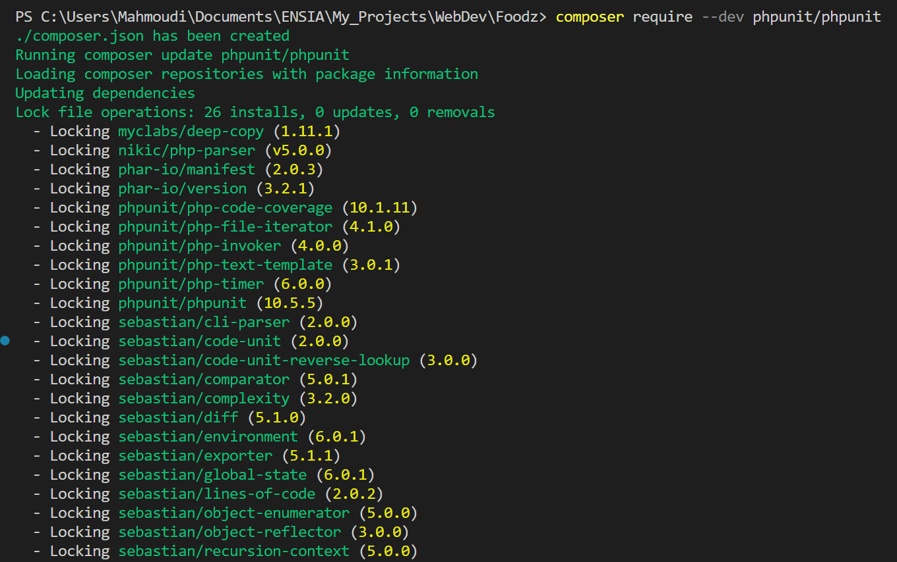
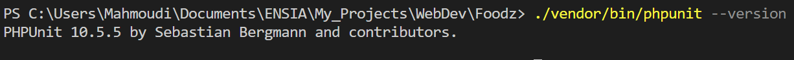

Unit Testing
Composer: A Dependency Manager for PHP
Composer is a tool for dependency management in PHP. It allows you to
declare the libraries your project depends on and it will manage
(install/update) them for you.
Composer is not a package manager in the same sense as Yum or Apt are.
Yes, it deals with "packages" or libraries, but it manages them on a
per-project basis, installing them in a directory (e.g. vendor) inside
your project. By default it will never install anything globally.
Moreover, Composer supports autoloading of classes, which means that
you can use classes without even including the files that define them.
How to install Composer?
On Windows (with XAMPP), the easiest way is the official installer
Composer-Setup.exe. During the installation,
it asks for the PHP executable: choose the one shipped with XAMPP, usually
C:\xampp\php\php.exe. The installer adds composer to your PATH, so
close your terminal, open a new one and check the installation with:
composer --version
On any system (command line), Composer offers an installer script that you run with PHP.
The script is made of 4 commands that, in order:
1. Download the installer (composer-setup.php) to the current directory
2. Verify the installer with its SHA-384 hash
3. Run the installer, which downloads composer.phar
4. Remove the installer
The hash used in step 2 changes with every new release of the installer, so do not copy it from
an old tutorial (or from this page). Always copy the current commands from the official page:
https://getcomposer.org/download/.
composer.phar is a PHAR (PHP archive): a whole PHP
application packed into a single file. If you used the command-line installer, you can run it with
php composer.phar ..., or make it global: on Linux/macOS run
sudo mv composer.phar /usr/local/bin/composer; on Windows simply prefer Composer-Setup.exe.
You can also choose the destination with
php composer-setup.php --install-dir=bin --filename=composer.
php.ini settings and warns you about anything missing, such as the
openssl extension. If the download fails because you are behind a proxy, set the
HTTP_PROXY / HTTPS_PROXY environment variables.

PHPUnit: The PHP Testing Framework
PHPUnit is a programmer-oriented testing framework for PHP. It is an
instance of the xUnit architecture for unit testing frameworks.
PHPUnit is the de-facto standard for unit testing in PHP projects. It
provides both a framework that makes the writing of tests easy as well as
the functionality to easily run the tests and analyse their results.
PHPUnit is distributed through PHAR
and available on Packagist.
Each major version of PHPUnit supports a range of PHP versions:
| PHPUnit version | Required PHP version |
|---|---|
| PHPUnit 12 | PHP 8.3 or newer |
| PHPUnit 11 | PHP 8.2 or newer |
| PHPUnit 10 | PHP 8.1 or newer |
| PHPUnit 9 | PHP 7.3 to PHP 8.x |
php --version. You do not
need to pick the PHPUnit version yourself: Composer chooses the newest version compatible with your PHP.
PHPUnit installation with Composer
The recommended way to install PHPUnit is via Composer, as a development dependency
(it is needed to develop the project, not to run it in production). In the root folder of your project,
run:
composer require --dev phpunit/phpunit
Composer creates (or updates) composer.json and composer.lock, downloads
PHPUnit into the vendor folder and puts the phpunit command in
vendor/bin.

To verify that PHPUnit has been installed correctly, run:
./vendor/bin/phpunit --version (Linux/macOS, Git Bash)
vendor\bin\phpunit --version (Windows cmd / PowerShell)

vendor folder to your .gitignore.
Commit composer.json and composer.lock instead: your teammates only need to run
composer install to get exactly the same versions.
Organising the Project and Autoloading (PSR-4)
A unit test checks a small unit of code (usually one class or one function) in isolation. To make our
classes easy to test, we put them in a src folder and the tests in a separate
tests folder:
my_project/ ├── composer.json ├── composer.lock ├── phpunit.xml ├── src/ │ ├── Calculator.php (class App\Calculator) │ └── Validator.php (class App\Validator) ├── tests/ │ ├── CalculatorTest.php (class Tests\CalculatorTest) │ └── ValidatorTest.php (class Tests\ValidatorTest) └── vendor/ (created by Composer, never edit it)
Instead of writing require_once for every file, we ask Composer to load classes
automatically. The PSR-4 standard maps a namespace prefix to a folder: the class
App\Calculator is looked for in src/Calculator.php, and
App\Forms\LoginForm in src/Forms/LoginForm.php. Add an
autoload section to composer.json:
{
"autoload": {
"psr-4": {
"App\\": "src/"
}
},
"autoload-dev": {
"psr-4": {
"Tests\\": "tests/"
}
},
"require-dev": {
"phpunit/phpunit": "^12.0"
},
"scripts": {
"test": "phpunit"
}
}
autoload-dev is used for classes needed only during development (our tests). The backslash
is doubled because \ is an escape character in JSON. After every change of the
autoload sections, regenerate the autoloader with:
composer dump-autoload
Any PHP script of the project (including your pages) can now use all classes by including a single
file: require __DIR__ . '/vendor/autoload.php';
^12.0 means "12.0 or any newer
12.x version". If your XAMPP runs PHP 8.2, Composer will refuse it; use ^11.0 instead, or just
run composer require --dev phpunit/phpunit and let Composer pick the version.
Writing a First Test
The class under test
Let us start with a simple class, App\Calculator, saved in
src/Calculator.php:
<?php
declare(strict_types=1);
namespace App;
final class Calculator
{
public function add(int|float $a, int|float $b): int|float
{
return $a + $b;
}
public function divide(int|float $a, int|float $b): float
{
if ($b == 0) {
throw new \InvalidArgumentException('Division by zero');
}
return $a / $b;
}
}
The test class
A test class:
- is named after the class it tests, followed by
Test(CalculatorTest) and saved in a file with the same name (tests/CalculatorTest.php); - extends
PHPUnit\Framework\TestCase; - contains public methods whose name starts with
test. Each method is one test; - follows the Arrange / Act / Assert pattern: prepare the objects, call the method, check the result with an assertion.
<?php
declare(strict_types=1);
namespace Tests;
use App\Calculator;
use PHPUnit\Framework\TestCase;
final class CalculatorTest extends TestCase
{
public function testAddReturnsTheSumOfTwoIntegers(): void
{
// Arrange
$calculator = new Calculator();
// Act
$result = $calculator->add(2, 3);
// Assert
$this->assertSame(5, $result);
}
public function testDivideReturnsAFloat(): void
{
$calculator = new Calculator();
$this->assertEqualsWithDelta(3.333, $calculator->divide(10, 3), 0.001);
}
public function testDivideByZeroThrowsAnException(): void
{
$calculator = new Calculator();
// The expectation must be declared BEFORE the code that throws
$this->expectException(\InvalidArgumentException::class);
$this->expectExceptionMessage('Division by zero');
$calculator->divide(10, 0);
}
}
A class used in your forms: Validator
The validation rules of your registration and login forms are perfect candidates for unit tests: they are pure functions (input → true/false) and a bug in them is a security problem.
<?php
declare(strict_types=1);
namespace App;
final class Validator
{
public static function isValidEmail(string $email): bool
{
return filter_var($email, FILTER_VALIDATE_EMAIL) !== false;
}
// At least 8 characters, one upper-case letter and one digit
public static function isStrongPassword(string $password): bool
{
return strlen($password) >= 8
&& preg_match('/[A-Z]/', $password) === 1
&& preg_match('/[0-9]/', $password) === 1;
}
/** Returns the list of error messages (empty array = valid form) */
public static function validateRegistration(array $data): array
{
$errors = [];
if (trim($data['name'] ?? '') === '') {
$errors[] = 'Name is required';
}
if (!self::isValidEmail($data['email'] ?? '')) {
$errors[] = 'Invalid e-mail';
}
if (!self::isStrongPassword($data['password'] ?? '')) {
$errors[] = 'Weak password';
}
return $errors;
}
}
<?php
declare(strict_types=1);
namespace Tests;
use App\Validator;
use PHPUnit\Framework\TestCase;
final class ValidatorTest extends TestCase
{
public function testAValidEmailIsAccepted(): void
{
$this->assertTrue(Validator::isValidEmail('student@ensia.edu.dz'));
}
public function testAnEmailWithoutAtSignIsRejected(): void
{
$this->assertFalse(Validator::isValidEmail('student.ensia.edu.dz'));
}
public function testAnEmptyFormReturnsThreeErrors(): void
{
$errors = Validator::validateRegistration([]);
$this->assertCount(3, $errors);
$this->assertContains('Invalid e-mail', $errors);
}
public function testACorrectFormReturnsNoError(): void
{
$errors = Validator::validateRegistration([
'name' => 'Amina',
'email' => 'amina@ensia.edu.dz',
'password' => 'Secret2025',
]);
$this->assertSame([], $errors);
}
}
The most useful assertions
| Assertion | Passes when |
|---|---|
| assertSame($expected, $actual) | Same value and same type (like ===). assertSame(5, '5')
fails. |
| assertEquals($expected, $actual) | Equal values (like ==), useful for arrays and objects. assertEquals(5, '5')
passes. |
| assertEqualsWithDelta($expected, $actual, $delta) | Floats that are close enough (never compare floats with ===). |
| assertTrue($value) / assertFalse($value) | The value is exactly true / false. |
| assertNull($value) | The value is null. |
| assertCount($n, $array) | The array (or Countable) has exactly $n elements. |
| assertContains($needle, $array) | The array contains the value. |
| assertStringContainsString($needle, $string) | The string contains the substring. |
| assertInstanceOf(ClassName::class, $object) | The object is an instance of the class. |
| expectException(ClassName::class) | The rest of the test throws that exception. |
assertSame to assertEquals: it
detects type bugs such as a function returning "5" (a string coming from
$_POST) instead of 5. Give your test methods long descriptive names: when a test
fails, its name tells you what is broken.
Running the Tests and Reading the Output
From the root folder of the project, run all the tests of the tests folder:
./vendor/bin/phpunit tests (Linux/macOS, Git Bash)
vendor\bin\phpunit tests (Windows)
With a phpunit.xml file (next section) a simple vendor\bin\phpunit (or
composer test, thanks to the scripts entry of composer.json) is enough. You can
also run only one file, vendor\bin\phpunit tests/CalculatorTest.php, or only the tests whose
name matches a pattern, vendor\bin\phpunit --filter Divide.
PHPUnit 12.x.x by Sebastian Bergmann and contributors. Runtime: PHP 8.3.x Configuration: C:\xampp\htdocs\my_project\phpunit.xml ..F.... 7 / 7 (100%) Time: 00:00.015, Memory: 8.00 MB There was 1 failure: 1) Tests\CalculatorTest::testDivideByZeroThrowsAnException Failed asserting that exception of type "InvalidArgumentException" is thrown. FAILURES! Tests: 7, Assertions: 9, Failures: 1.
Each character of the progress line is one test:
.the test passed;Ffailure: an assertion is false (the code does not do what is expected);Eerror: an unexpected exception or PHP error occurred while running the test (e.g. calling an undefined method);Rrisky test (e.g. a test without any assertion),Sskipped,Iincomplete,D/N/Wdeprecation, notice or warning triggered by the code.
For each failure, PHPUnit prints the test name, the reason (expected vs actual value) and the file and
line of the failing assertion. When everything passes, the last line is green:
OK (7 tests, 9 assertions). Add --testdox to print the test names as readable
sentences ("Divide by zero throws an exception").
Configuring PHPUnit: phpunit.xml
Instead of repeating options on the command line, put them in a phpunit.xml file at the root
of the project. You can generate a starting file with
vendor\bin\phpunit --generate-configuration, or write it yourself:
<?xml version="1.0" encoding="UTF-8"?>
<phpunit xmlns:xsi="http://www.w3.org/2001/XMLSchema-instance"
xsi:noNamespaceSchemaLocation="vendor/phpunit/phpunit/phpunit.xsd"
bootstrap="vendor/autoload.php"
colors="true"
failOnRisky="true"
failOnWarning="true">
<testsuites>
<testsuite name="Unit">
<directory>tests</directory>
</testsuite>
</testsuites>
<!-- The application code (used for code coverage reports) -->
<source>
<include>
<directory>src</directory>
</include>
</source>
<php>
<ini name="error_reporting" value="-1"/>
<env name="APP_ENV" value="testing"/>
</php>
</phpunit>
bootstrap is executed before the tests: here it loads Composer's autoloader so that the
classes App\... and Tests\... are found. testsuites tells PHPUnit
where the tests are; source tells it where the application code is.
<source> element exists since PHPUnit 10. Old
tutorials use <coverage><include>... or <filter><whitelist>:
if PHPUnit warns that your configuration is outdated, run
vendor\bin\phpunit --migrate-configuration.
Data Providers
We often want to run the same test with many inputs (several valid e-mails, several invalid passwords,
...). Rather than copying the test, we write a data provider: a
public static method that returns an array of argument lists. The test method receives each
list as parameters and PHPUnit runs it once per entry. The provider is linked to the test with the PHP 8
attribute #[DataProvider('methodName')].
<?php
declare(strict_types=1);
namespace Tests;
use App\Validator;
use PHPUnit\Framework\Attributes\DataProvider;
use PHPUnit\Framework\TestCase;
final class PasswordTest extends TestCase
{
public static function passwordProvider(): array
{
// 'name of the case' => [argument 1, argument 2]
return [
'strong password' => ['Secret2025', true],
'too short' => ['Ab1', false],
'no digit' => ['SecretSecret', false],
'no upper-case' => ['secret2025', false],
'exactly 8 characters' => ['Abcdefg1', true],
];
}
#[DataProvider('passwordProvider')]
public function testIsStrongPassword(string $password, bool $expected): void
{
$this->assertSame($expected, Validator::isStrongPassword($password));
}
}
This file counts as 5 tests. If one case fails, PHPUnit prints its key, for example
testIsStrongPassword with data set "no digit", so always give meaningful keys.
/** @dataProvider passwordProvider */ just above the test method.
Annotations are deprecated in PHPUnit 11 and no longer supported in PHPUnit 12, so use attributes in new
code. The same applies to @test (attribute #[Test]) and @depends
(#[Depends('...')]).
Preparing Each Test: setUp()
PHPUnit creates a new instance of the test class for every test method, so tests never
share state. If several tests need the same objects, create them in the setUp() method,
which PHPUnit calls before each test. tearDown() is called after each test (to close a file
or a connection, for instance).
<?php
declare(strict_types=1);
namespace Tests;
use App\Calculator;
use PHPUnit\Framework\TestCase;
final class CalculatorTest extends TestCase
{
private Calculator $calculator;
protected function setUp(): void
{
// Runs before EACH test: every test gets a fresh Calculator
$this->calculator = new Calculator();
}
public function testAdd(): void
{
$this->assertSame(5, $this->calculator->add(2, 3));
}
public function testAddNegativeNumbers(): void
{
$this->assertSame(-5, $this->calculator->add(-2, -3));
}
}
setUp() must be protected and return
void. There are also setUpBeforeClass() / tearDownAfterClass()
(static, run once for the whole class) but avoid them for mutable objects: tests must stay independent and
pass in any order.
Testing Code that Uses a Database
A real unit test should be fast and must not depend on XAMPP's MySQL server or on the data of your development database. There are two common solutions:
- An in-memory SQLite database: PDO can open a temporary database that lives in RAM
(
new PDO('sqlite::memory:')). Each test creates the tables it needs, and everything disappears at the end of the test. - Mocks (test doubles): replace a dependency by a fake object created by PHPUnit, which returns predefined values and records how it was called.
Both solutions only work if your classes receive their PDO connection (or their dependencies) as constructor parameters instead of creating them internally. This is called dependency injection, and it is exactly what the Model classes of the MVC pattern should do.
Solution 1: an in-memory SQLite PDO
<?php
// src/ProductRepository.php
declare(strict_types=1);
namespace App;
use PDO;
final class ProductRepository
{
// The connection is injected: MySQL in the application, SQLite in the tests
public function __construct(private PDO $pdo)
{
}
public function add(string $name, float $price): int
{
if ($price < 0) {
throw new \InvalidArgumentException('Price must be positive');
}
$stmt = $this->pdo->prepare('INSERT INTO product (name, price) VALUES (:name, :price)');
$stmt->execute(['name' => $name, 'price' => $price]);
return (int) $this->pdo->lastInsertId();
}
public function findAll(): array
{
return $this->pdo->query('SELECT id, name, price FROM product ORDER BY id')
->fetchAll(PDO::FETCH_ASSOC);
}
}
<?php
// tests/ProductRepositoryTest.php
declare(strict_types=1);
namespace Tests;
use App\ProductRepository;
use PDO;
use PHPUnit\Framework\TestCase;
final class ProductRepositoryTest extends TestCase
{
private ProductRepository $repository;
protected function setUp(): void
{
$pdo = new PDO('sqlite::memory:');
$pdo->setAttribute(PDO::ATTR_ERRMODE, PDO::ERRMODE_EXCEPTION);
// SQLite syntax (MySQL would use INT AUTO_INCREMENT)
$pdo->exec('CREATE TABLE product (
id INTEGER PRIMARY KEY AUTOINCREMENT,
name TEXT NOT NULL,
price REAL NOT NULL
)');
$this->repository = new ProductRepository($pdo);
}
public function testANewRepositoryIsEmpty(): void
{
$this->assertCount(0, $this->repository->findAll());
}
public function testAddedProductsAreReturnedByFindAll(): void
{
$id = $this->repository->add('Keyboard', 2500.0);
$this->repository->add('Mouse', 900.0);
$products = $this->repository->findAll();
$this->assertSame(1, $id);
$this->assertCount(2, $products);
$this->assertSame('Keyboard', $products[0]['name']);
$this->assertEquals(900.0, $products[1]['price']);
}
public function testANegativePriceIsRefused(): void
{
$this->expectException(\InvalidArgumentException::class);
$this->repository->add('Broken', -1.0);
}
}
pdo_sqlite extension. Check it with
php -m; if it is missing, remove the ; in front of
extension=pdo_sqlite in C:\xampp\php\php.ini. Keep your SQL standard (avoid
MySQL-only functions) so that the same queries run on both databases; for MySQL-specific queries, write a
few integration tests against a separate test database (never your real one).
Solution 2: mocks with createMock()
Suppose that registering a user sends a welcome e-mail. We do not want the tests to send real e-mails,
so the service depends on an interface Mailer, and in the tests we give it a mock:
<?php
// src/Mailer.php
namespace App;
interface Mailer
{
public function send(string $to, string $subject, string $body): bool;
}
<?php
// src/RegistrationService.php
namespace App;
final class RegistrationService
{
public function __construct(private Mailer $mailer)
{
}
public function register(string $email): bool
{
if (!Validator::isValidEmail($email)) {
throw new \InvalidArgumentException('Invalid e-mail');
}
return $this->mailer->send($email, 'Welcome', 'Thank you for registering!');
}
}
<?php
// tests/RegistrationServiceTest.php
declare(strict_types=1);
namespace Tests;
use App\Mailer;
use App\RegistrationService;
use PHPUnit\Framework\TestCase;
final class RegistrationServiceTest extends TestCase
{
public function testAWelcomeEmailIsSentOnce(): void
{
$mailer = $this->createMock(Mailer::class);
$mailer->expects($this->once()) // must be called exactly once
->method('send')
->with('amina@ensia.edu.dz', 'Welcome', $this->anything())
->willReturn(true); // fake return value
$service = new RegistrationService($mailer);
$this->assertTrue($service->register('amina@ensia.edu.dz'));
}
public function testNoEmailIsSentForAnInvalidAddress(): void
{
$mailer = $this->createMock(Mailer::class);
$mailer->expects($this->never())->method('send');
$service = new RegistrationService($mailer);
$this->expectException(\InvalidArgumentException::class);
$service->register('not-an-email');
}
}
createMock() when you want to check
how the dependency is called (expects(...)). If you only need it to return a value,
use createStub() with ->method('send')->willReturn(true). Recent PHPUnit
versions warn about mocks that have no expectations.
What Should You Test in the Course Project?
You cannot (and should not) test everything. Focus on the code that contains logic and whose failure would hurt your users:
- Form validation: required fields, e-mail format, password rules, phone numbers, dates, maximum lengths. Test valid values, invalid values and limits (empty string, exactly 8 characters, ...).
- Business rules: computing a cart total, a discount, a reservation price, checking that a booking date is in the future, that stock cannot become negative.
- Models / repositories: inserting, finding, updating and deleting rows (with SQLite in memory), including "not found" cases.
- Security helpers: password hashing and verification
(
password_hash/password_verify), escaping output withhtmlspecialchars, access rules ("only an admin can delete a product"). - Bugs: when you find a bug, first write a test that reproduces it, then fix it. The bug can never come back silently.
Do not unit-test the HTML layout, the CSS or PHP itself (no need to check that strlen
works). Keep the logic out of your view files: a function hidden in the middle of an HTML page cannot be
tested, a method of a class in src/ can.
Test-Driven Development (TDD)
Test-Driven Development reverses the usual order: you write the test before the code. You work in very short cycles of three steps:
- Red: write a small test for a behaviour that does not exist yet. Run it and watch it fail (this proves the test can fail).
- Green: write the simplest code that makes the test pass, even if it is not elegant.
- Refactor: clean the code (names, duplication, structure) while running the tests again to make sure everything stays green.
Example: we want a function Validator::isValidPhone() for Algerian mobile numbers.
// 1. RED: the test is written first (in tests/ValidatorTest.php);
// it fails because the method does not exist yet
public static function phoneProvider(): array
{
return [
'mobile 05' => ['0551234567', true],
'mobile 06' => ['0661234567', true],
'mobile 07' => ['0771234567', true],
'too short' => ['055123', false],
'landline 021' => ['0211234567', false],
'letters' => ['05512345ab', false],
];
}
#[DataProvider('phoneProvider')]
public function testIsValidPhone(string $phone, bool $expected): void
{
$this->assertSame($expected, Validator::isValidPhone($phone));
}
// 2. GREEN: the simplest code that passes, added to src/Validator.php
public static function isValidPhone(string $phone): bool
{
return preg_match('/^0[567][0-9]{8}$/', $phone) === 1;
}
// 3. REFACTOR: e.g. also accept "+213 551 23 45 67" by removing spaces and
// converting "+213" to "0" first, then run the tests again: still green.